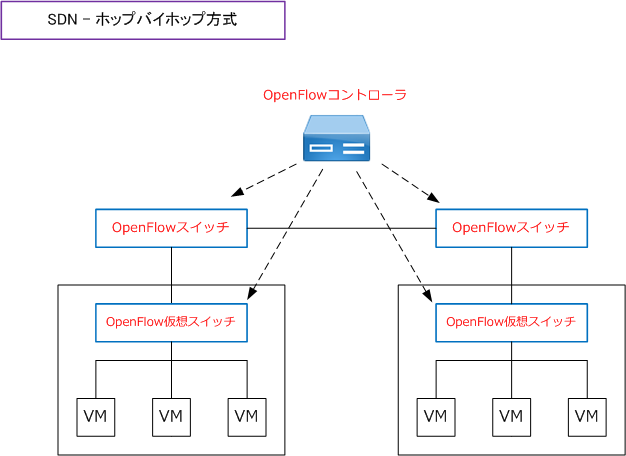
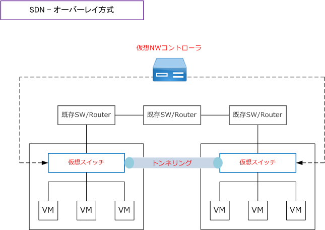

SDN - hop by hop / overlay
SDNの方式 - ホップバイホップとオーバーレイ
SDNの方式はいくつかに分類できますが、大きくは「ホップバイホップ方式」「オーバーレイ方式」の2つに 分類することができます。オーバーレイは「仮想オーバーレイ方式」「エッジオーバーレイ」とも呼ばれます。
SDNの方式 - ホップバイホップ方式
ホップバイホップ方式のSDNは、OpenFlowを前提に作られています。ホップバイホップでは全てのスイッチで つまり hop by hop にパケットの転送制御をしています。OpenFlowプロトコルでは、ネットワークを構成する スイッチでのパケットの転送方式を全てOpenFlowコントローラ側で決定して、個々のOpenFlowスイッチでは パケットの転送に専念させる方式となっています。詳しは「SDN - OpenFlow とは」の記事をご参照ください。

SDNの方式 - オーバーレイ方式
オーバーレイ方式のSDNは、仮想スイッチ間でトンネリングを定義することで、既存の物理ネットワーク環境 をそのまま利用できる方式。オーバーレイ方式ではハイパーバイザーに組み込んだ仮想スイッチを使用します。
オーバーレイ方式はサーバ仮想化が導入されている場合、新規の機器導入が最小限で済むメリットがある一方、 細かな経路制御や帯域制御などはできないデメリットがあります。例えば VMware NSX はオーバーレイ方式の SDNを提供するネットワーク仮想化プラットフォーム」であり、様々なネットワークサービスを仮想で提供して コントローラから集中制御を行います。

オーバーレイは、イーサネットフレームをIPパケットにカプセル化してトンネリングする設定方式です。この オーバーレイ方式のトンネルリンクでやり取りされるイーサネットフレームはIPパケットに丸ごとカプセル化 されて通常のIPパケットとして転送されることから、その経路上の既存ネットワーク機器を流用できます。
上述を実現するために使用するオーバレイプロトコルとしてVXLANがあります。VXLANでは、UDPパケット の中にイーサネットフレームをカプセル化します。その他のオーバレイプロトコルにはNVGRE、STTなどが あります。これらのオーバレイプロトコルを使用することにより仮想ネットワークのLayer2を延伸できます。